Çıkış noktası
Firmanın 2014'ten beri kullandığı logo yalnızca 150×70 piksellik bir JPG olarak var. Ama içinde güçlü bir fikir taşıyor; üç öneri de bu fikri koruyor.
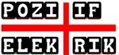
- Harfler kutucukta. Her harf koyu bir kutucuğun içinde; pano etiketlerini ve şalter tuşlarını andıran, işin kendisinden gelen bir görüntü.
- Kırmızı artı = T. POZİ✚İF ve ELEK✚RİK: iki kelimedeki T harfini tek bir artı taşıyor.
- Artı = pozitif kutup. Aynı işaret elektrikte artı (+) kutup; firma adıyla birebir örtüşüyor.
ARestorasyon
Eski logonun yeniden çizilmiş, temizlenmiş vektörü. Yerleşim, oranlar, daktilo tipi ayaklı harfler ve siyah-kırmızı renkler korundu; bulanıklık, gölge ve düzensiz aralıklar giderildi.
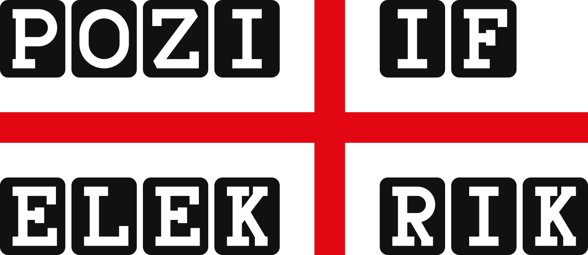
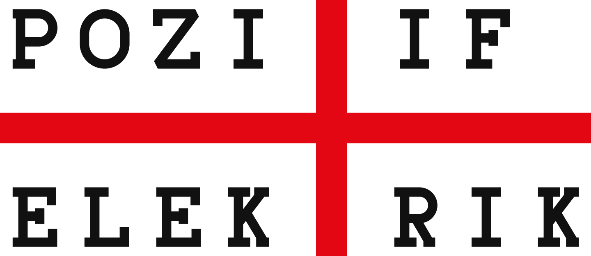
Koyu zemin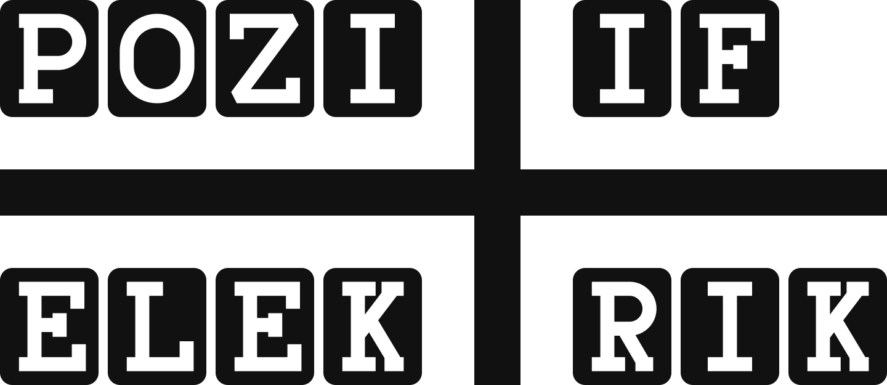
Tek renk siyahArtıları
- Müşterinin tanıdığı logo; hiçbir alışkanlık değişmiyor.
- Tabela, araç giydirme, kartvizit için hemen kullanılabilir.
Dikkat
- Eski logodaki gibi noktasız I kullanıldı (POZITIF). Türkçe yazımla İ isteniyorsa B önerisine bakın.
BYenilenmiş
Aynı yerleşim, daha çağdaş bir dil: kutucuklar sitenin lacivert rengine, harfler pano gravür yazısını andıran tek çizgili bir harfe geçti. Türkçe noktalı İ kullanıldı, artının uçları yuvarlatıldı.
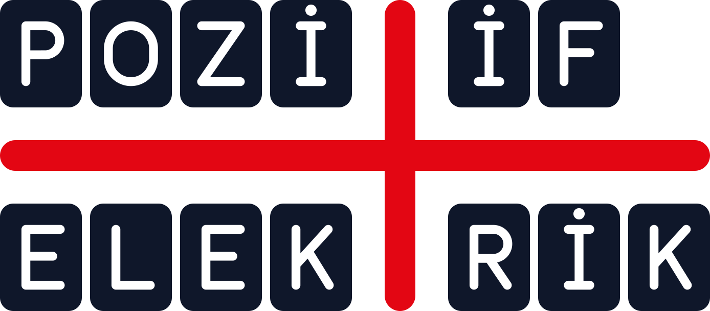
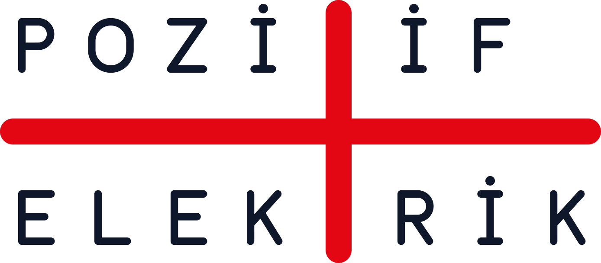
Koyu zemin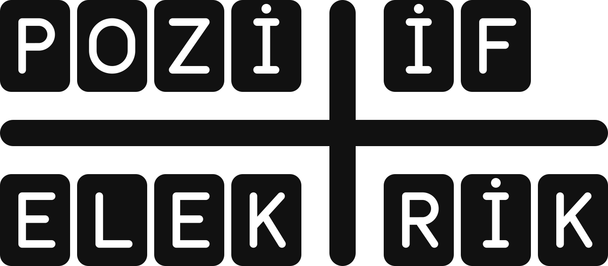
Tek renk siyah
Tek renk beyazArtıları
- Eski logoyla bağ kopmadan daha güncel bir görünüm.
- Lacivert, denizcilik ve yeni web sitesiyle uyumlu.
Dikkat
- İki satırlı yapı küçük alanlarda (sosyal medya profili, favicon) sıkışır; orada C amblemi kullanılır.
CAmblem + yatay logo
Eski logonun iskeleti sembole dönüştü: dört kutucuğu bölen kırmızı artı. Yanında "POZİ✚İF" yazısı ve firmanın tam adını tamamlayan "MARİN ELEKTRİK" satırı var. Amblem tek başına favicon, sosyal medya profili ve tekne/pano etiketi olarak kullanılabilir.
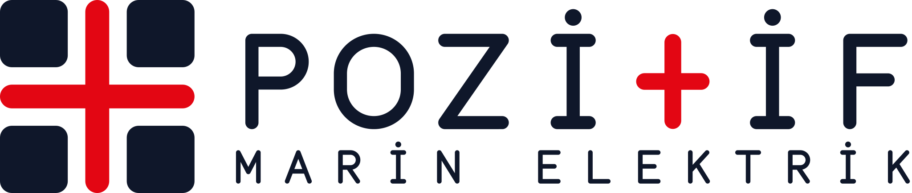
Koyu zemin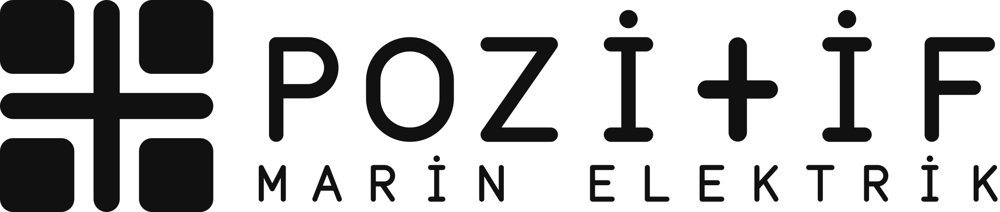
Tek renk siyah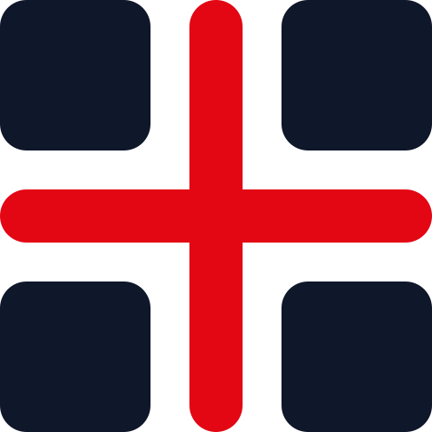
Amblem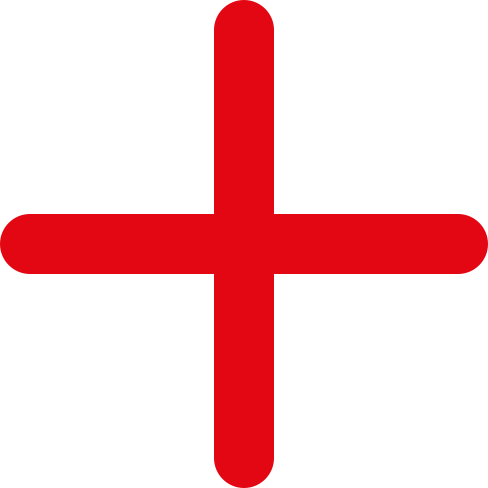
Koyu zemin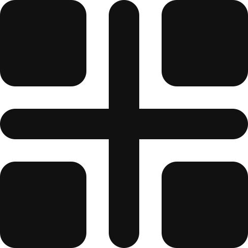
Tek renk siyah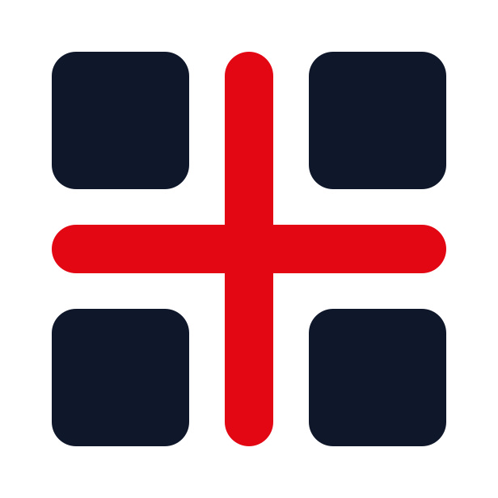
Uygulama / faviconArtıları
- Her boyutta çalışan bir sistem: yatay logo + tek başına amblem.
- Firmanın tam adı ("Marin" dahil) logoda yer alıyor.
Dikkat
- Eski logodan en çok uzaklaşan öneri; kutucuklu harf dizisi yerine sembol öne çıkıyor.
Küçük boyut testi
Gerçek piksel boyutlarında. Amblem 16 pikselde bile seçilebiliyor; iki satırlı logolar 120 pikselin altında kullanılmamalı.
Web sitesinde
Yeni sitenin üst menüsünde ve alt bilgisinde nasıl duracağı.
Renkler
Kırmızı, eski logodaki saf kırmızının (#FA0203) baskıda daha dengeli duran hali. Baskıda CMYK/Pantone karşılığı matbaa provasıyla kesinleştirilmeli.
B ve C
A ve tek renk
Dosyalar
Her öneri dört renk sürümüyle (renkli, negatif, siyah, beyaz) üç biçimde hazır.
| Klasör | Ne için |
|---|---|
svg/ | Ana dosyalar. Web sitesi, Illustrator/Figma/Inkscape'te düzenleme, her boyuta büyütme. |
pdf/ | Matbaa, tabela, araç giydirme, kartvizit. Vektördür, büyütülünce bozulmaz. |
png/ | Office belgeleri, e-posta imzası, sosyal medya (şeffaf zemin; logolar 2400 px, amblem 1024 px). Favicon: 32, 180, 512 px. |
Tek renk sürümler
siyahvebeyazdosyalarda harfler kutucuktan oyulmuştur; zemin rengi harflerin içinden görünür. Gravür, kaşe, tek renk baskı için.
Folyo kesim / lazer
- Bütün harfler dolgulu şekil olarak hazır (anahatta dönüştürülmüş); dosyalarda yazı tipi, çizgi ya da maske yok. SVG/PDF doğrudan kesim ve gravür makinesine verilebilir.